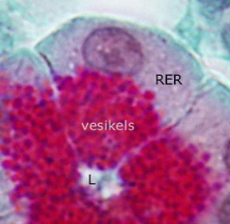
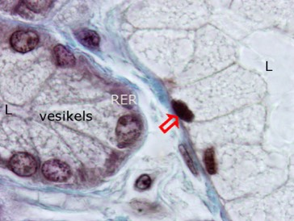
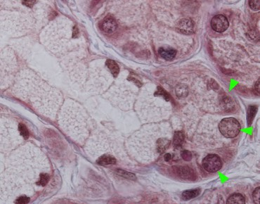
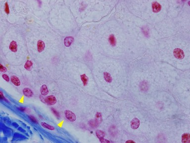

E) Kijk nu naar de kenmerken van één kliercel in een kliercelgroepje. Bepaal eerst de kant van het lumen (de apicale kant van de cel) en de scheiding met het omliggende bindweefsel (basale kant van de cel; hier vind je de basaalmembraan).
a. We maken een onderscheid op basis van het secretieproduct:
- Sereuze kliercellen maken eiwitten aan. Zij bezitten een uitgebreid ruw endoplasmatisch reticulum (RER) aan de basale kant van de cel (rondom de ronde kern). In het apicale deel van de cel zitten secretievesikels gevuld met eiwitten, klaar om uitgescheiden te worden in het lumen. Bij sereuze kliercellen is het secreet eiwitrijk en waterig.
- Bij muceuze kliercellen wordt mucus (visceuze massa voornamelijk samengesteld uit glycoproteïnen en water) opgestapeld in grote vesikels in het apicale celgedeelte waardoor de kern verdrukt wordt naar de basale kant. Meestal kleurt het apicale celdeel licht aan bij routine LM preparatie.
- Wanneer zowel sereuze als muceuze kliercellen voorkomen in een klier spreken we van een sero-muceuze klier.
- Sommige kliercellen produceren vetachtige substanties (talg). Vetten worden bij preparatie weggewassen. Bij vet-producerende kliercellen blijven de kernen meestal centraal in de cel.
Produceren de kliercellen sereus, muceus, sero-muceus of vet-achtig secreet?

Dit is een sereuze kliercel. Je kan zien dat ze eiwitten produceert. De kern is rond en bevat voornamelijk veel euchromatine en een duidelijke nucleolus. Rondom de kern is een basofiele zone, omdat hier veel ruw endoplasmatisch reticulum aanwezig is. Naar het lumen (L) van het klierdeeltje toe bevat de cel vesikels die met eiwitten zijn gevuld.

Hier zie je een sereus klierdeeltje (links) en een muceus klierdeeltje (rechts) naast elkaar. In beide delen secreteren kliercellen naar het lumen (L). De kenmerken van de sereuze kliercel zijn goed te herkennen. Bij een muceuze kliercel worden glycoproteïnen aangemaakt die in het apicale celdeel worden opgeslagen. De kern (pijl) is volledig weggedrukt naar de basale kant.

In dit klierdeeltje zie je bovenop de muceuze kliercellen een groepje sereuze cellen (pijlpunten). Dit wordt de sikkel van Gianuzzi genoemd. Het klierdeeltje is sero-muceus.

Deze kliercellen produceren lipiden. Kliercellen die tegen de basaal membraan liggen (pijlpunten) produceren nog geen secreet. Wanneer de cellen opschuiven naar het lumen toe stapelen ze lipiden op in het cytoplasma rondom de kern.
Vordering zelfstudie klierepitheel: